Categorization added to Import and Export
The org.eclipse.ui.importWizards and org.eclipse.ui.exportWizards
extension points now support categorization.
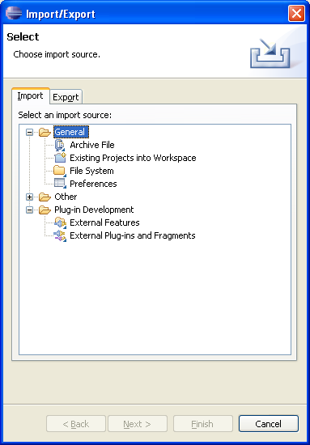
Tooltips for annotations in Text editors
TextSourceViewerConfiguration which is used by text editors:

Annotation navigation in Text editors

JFace field assistance
JFace introduces new support for assisting the user in completing fields inside dialogs and forms. The org.eclipse.jface.fieldassist package provides classes that let you decorate arbitrary controls with images and corresponding hover text. These can be used for purposes such as marking required fields in a dialog, showing field-based error conditions, or showing content-assist prompts. The package also allows you to install content proposals on a control, including a pop-up dialog with content proposals, secondary pop-ups for further information, and options for invoking proposals explicitly or in an automatic (type-ahead) style.

Support for dynamic Help content
Search enhancements
User assistance indexing and searching has been enhanced in various ways. Additional search participants can be registered via extension point that can add content to the Lucene index. Help now contributes an XHTML search participant that can index dynamic help documents authored in XHMTL (see above). In addition, documents that were previously not in the index will now appear (for example, cheat sheets and Welcome pages). Search hits can now have different icons and the 'open' action can be delegated to the search engine.
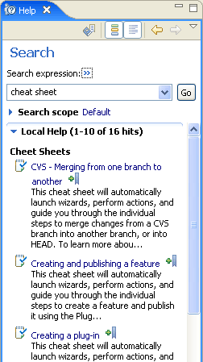
Tabbed properties framework
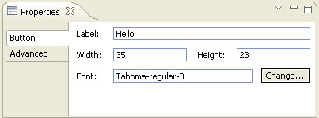
See the article The Eclipse Tabbed Properties View for details.
Alternative file systems
Support has been added to the project and linked resource wizards for creating resources that are linked to other file systems. Plug-ins that define alternate file systems can hook into this wizard support by using the org.eclipse.ui.ide.filesystemSupport extension point.
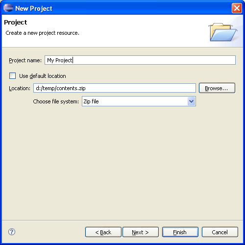
Problems can be grouped
Problems in the Problems view can now be grouped. There are default groupings by severity and problem type, and additional groups can be defined via the org.eclipse.ui.ide.markerSupport extension point.
Improved help in dialogs
Embed command links in User Assistance content
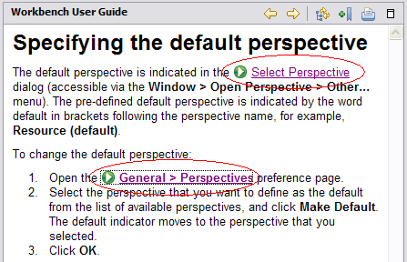
Support for launching commands from cheat sheets
<?xml version="1.0" encoding="UTF-8"?> <cheatsheet title="Example of Commands in a Cheat Sheet"> <intro> <description>A cheat sheet shows the package explorer</description> </intro> <item title="Show Search View"> <description>This is a step with a command which shows the search view.</description> <command serialization= "org.eclipse.search.ui.views.SearchView"/> </item> <item title="Step 2"> <description>This is a step with a command and parameters, shows package explorer.</description> <command serialization="org.eclipse.ui.views.showView( org.eclipse.ui.views.showView.viewId= org.eclipse.jdt.ui.PackageExplorer)"/> <onCompletion> Command example completed. </onCompletion> </item> </cheatsheet>
Completion message
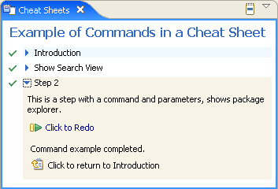
Composite cheat sheets
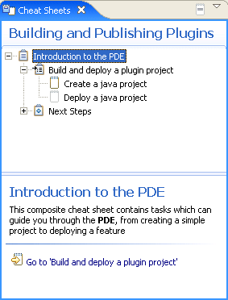
Composite cheat sheets have a tree which shows the tasks and their status. The right hand/lower panel contains the individual tasks.
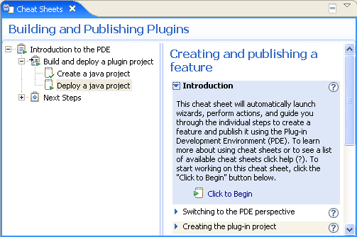
The content of a composite cheat sheets is defined in an XML file. The content file can specify what dependencies exist between tasks so that a task can only be started after any prerequisite tasks have been completed.
Help keyword index
Note: Index content is not yet available for the SDK (the index will only appear if content is available).
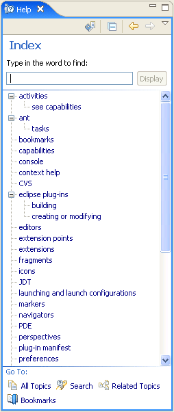
XHTML help docs conversion tool
This function can be invoked via PDE Tools > Convert Help files to XHTML from the context menu of plug-in projects.
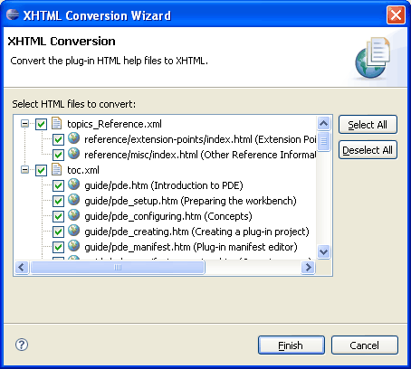
Universal welcome
A Welcome preference page provided by Universal Welcome opens up Welcome customization to the end users, and can be included in any product that wants to offer it. You can read more about this in the Universal Welcome specification.
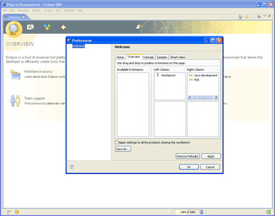
Support for configuration and themes in Welcome
Themes represent named collections of CSS files, properties, and images that collectively define the look of the Welcome content. Universal Welcome takes advantage of this support by providing theme selection capability and two concrete themes in 3.2: 'Circles' and 'Purple Mesh'.
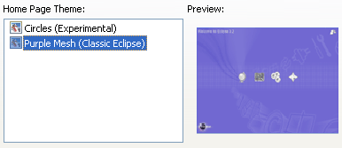
Namespace support for the Ant extension points
The org.eclipse.ant.core antTasks and antTypes extension points now allow for the designation of a URI that the definition should live in. See bug 133190 for full details of all the changes.
Sort indicator in tables and trees
Table and Tree now support a sort direction indicator in the header of the column.
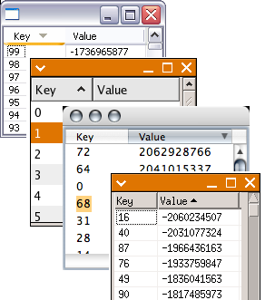
SWT snippets showing sorting by column (simple) and sorting by column (virtual table).
Reorderable columns in trees
In Eclipse 3.1, we added the ability to reorder columns in a Table. That support has now been added to Tree.
The display order of columns in a tree can be changed by dragging the column header, or it can be set programmatically.
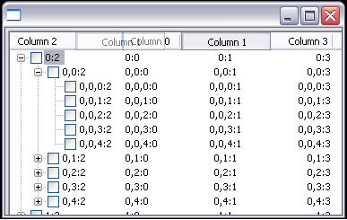
Example snippet.
Improved XP theme support
On Windows XP, SWT now shows the textured background in tab folders. The groups, labels, check boxes, etc. are all transparent to this background. Also, custom widgets, such as StyledText, now show the correct border for the prevailing Windows XP theme.

See the SWT FAQ for instructions on how to run with a Windows XP skin.
Animated GIFs
Animated GIF images can be saved to file.
For an example see the SWT snippet.
Desktop appearance notification
When appearance settings such as theme, font, or default colors are
changed for the desktop, an SWT.Settings event is issued for
the Display.
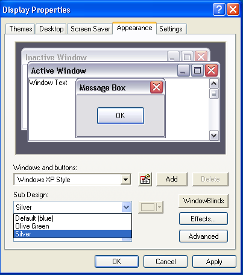
Dispose notification
Previously, when an SWT.Dispose event was received for a parent composite, all
the children were disposed and therefore could not be referenced. For 3.2,
the Dispose event is received before the children have been released in the OS.
Tool tips for columns
Tooltip text can be set on a table
or tree column header using TableColumn/TreeColumn.setTooltipText(String).
Vertical CoolBar
A vertical coolbar can be created
by using the SWT.VERTICAL style.
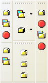
OpenGL support
You can now use OpenGL in SWT applications. The OpenGL interface works with third-party OpenGL libraries such as LWJGL.
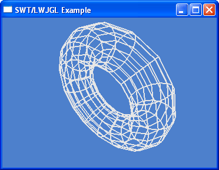
For examples, see the SWT snippets
Virtual tree
Tree now supports the SWT.VIRTUAL style. This allows you to create trees with large amounts of data quickly. When TreeItems are needed, they are created on-demand.
For an example see the SWT snippet.
Buttons with image and text
Buttons can now show an image as well as text. This feature is supported on Windows XP, Mac OS X, and GTK.
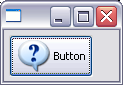
HIView on Mac OS X
SWT now makes use of HIView on Mac OS X. This resolves many clipping and sizing issues.
Embedding objects in text
Using TextLayout, it is now possible to embed objects such as images or widgets inside text. Glyph metrics such as ascent, descent and width can be specified. Objects wrap with the text.
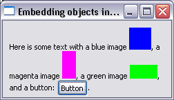
For an example see the SWT snippet.
Indent, align and justify text
TextLayout now supports indenting, justifying, and aligning text.
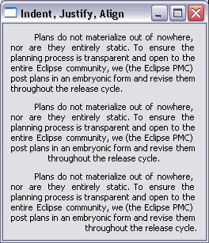
For an example see the SWT snippet.
Text baseline rise
Using TextLayout and TextStyle, it is now possible to specify the baseline rise for a range of text.
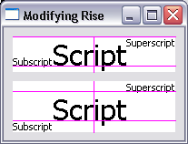
For an example see the SWT snippet.
HSB color support
A color can be created by specifying the hue, saturation, and brightness. In addition, for a given color, the hue, saturation, and brightness values can be queried.
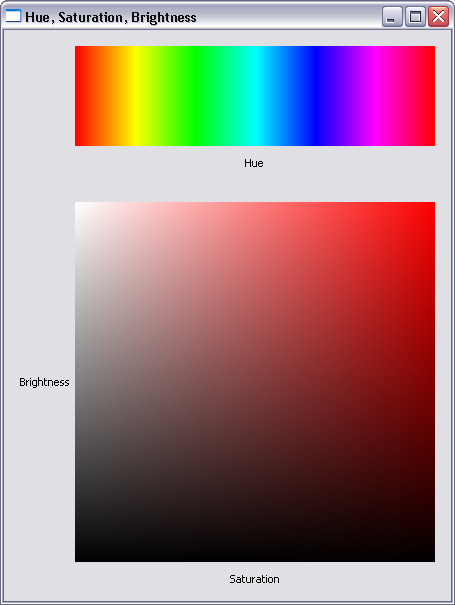
For an example, see the SWT snippet
StyledText alignment, indentation, justification
StyledText now supports indenting, justifying and aligning text.
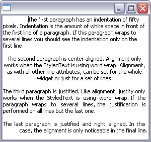
For an example, see the SWT snippet
Embedded objects in StyledText
StyledText now allows you to embed objects such as images or widgets inside the text. Objects wrap with the text.
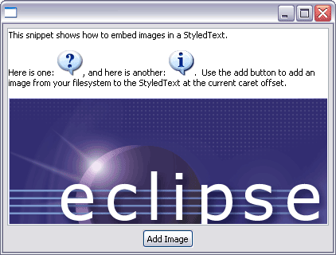
For an example, see the SWT snippet
Background image
A background image can be set into a control. In addition, the background can be inherited by child widgets such as labels.
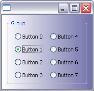
For an example, see the SWT snippet
Native image loading
The constructor Image(Device device, String filename) will
now load images using native operating system calls. This has improved
performance of image loading and increased the maximum size of image that
can be loaded.
Dragging text
If the SWT.DragDetect event is hooked on Text or StyledText,
the selection will not be cleared when the user drags from within a selected
range of text. This makes it possible to support dragging from the Text and
StyledText widgets.
For an example, see this SWT snippet
New ExpandBar widget
The ExpandBar widget allows the user to show and hide collections of widgets by clicking on a header. The ExpandBar contains multiple items which each may have an image and title in the header.
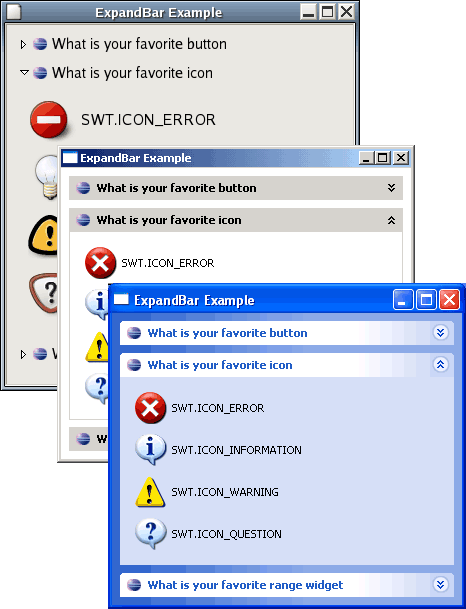
For an example, see this SWT snippet.
Bullets in StyledText
StyledText can now show lists formatted in a variety of styles, including bullets, numbered, upper case or lower case letters, and custom-defined styles.
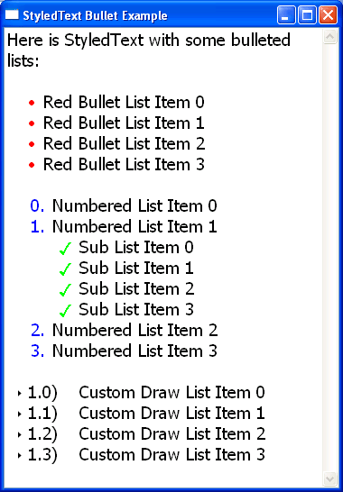
For an example, see this SWT snippet.
Custom draw Tree
The Tree widget now supports custom draw for individual cells. Applications can enhance the native look and feel of the tree by custom rendering of the data. The application has control over row height so multiple lines of text can be drawn. In addition, it can present multiple images in the same cell, change font or color multiple times, and change the way selections are drawn.
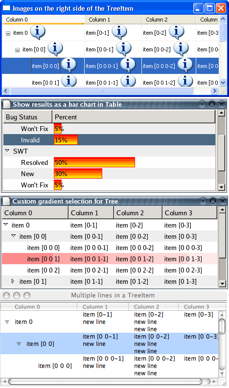
For examples, see the following snippets:
Custom draw Table
The Table widget now supports custom draw for individual cells. While still maintaining the native look and feel of the table, users can customize how cells are drawn to display data in a form other than text with an image, to show multiple lines of text in one cell, to change font and color multiple times within the same cell, to override the native selection drawing, etc.
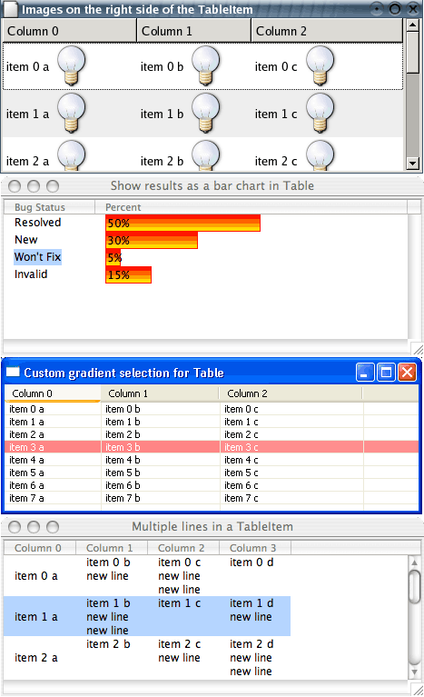
For examples, see the following snippets:
Drag over effects for Table and Tree
The Table and Tree widgets now provide visual feedback of what is being dragged.
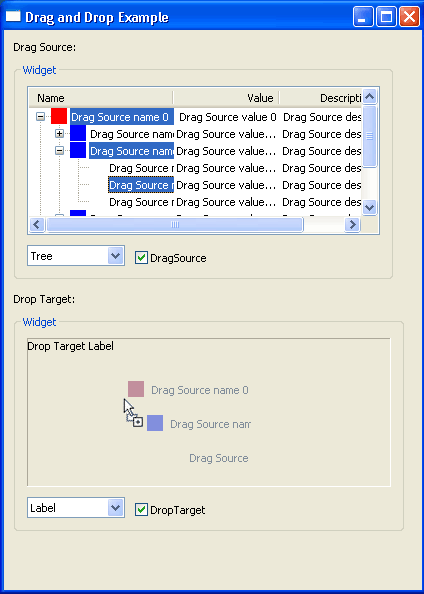
New Tooltip class
The new ToolTip class can be used to display tooltips that are not directly tied to a Control. These tooltips can be placed anywhere, and can have either the platform default appearance or a BALLOON appearance as shown below.
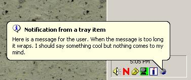